AI Academy · Level 2 · Grade 7 · Week 33 · Student lesson
Build the Recommender
Learn to understand, design, build, test and explain AI systems responsibly.
Project: Transparent Book Recommender
Before you start
Week 23: score only candidates satisfying hard constraints.
Plan time to read, investigate and explain. Keep predictions separate from observations.
Student lesson · 1 of 16
Your mission
Your learning target
I can implement a deterministic recommender.
I can handle ties and no eligible options.
I can explain recommendations with their limits.
Remember before reading
Close your notes first. A rough first answer helps us choose the right starting point; it is not a score for your ability.
Without opening the old lesson, explain one key idea from Project Problem and Success Test. Give an example and a mistake that the idea helps you avoid.
Without opening the old lesson, explain one key idea from Agents and Tools. Give an example and a mistake that the idea helps you avoid.
Without opening the old lesson, explain one key idea from Predictive vs Generative. Give an example and a mistake that the idea helps you avoid.
After trying, check the relevant lesson or ask your teacher. Change the part of your explanation that the evidence shows was wrong.
Week 33: Build the Recommender
A transparent baseline makes later improvements understandable.
THINKER MISSION
Implement a scoring table and produce ranked outputs.
Thinker name and date:
Readiness for the connected explanation
An option violates a hard duration limit but has the best score. Should it win?
Readiness for Building the data pipeline
What are the steps between raw records and a recommendation?
This week’s end goal
By the end, I can implement deterministic filtering, scoring and ties for a complete catalogue case.
Student lesson · 2 of 16
Notice the evidence
PICTURE STORY
Notice → Predict → Explain
Begin with visible evidence. Do not explain more than the picture and information support.
MYSTERY
The learners must use build the recommender to solve a problem. What information do they have? What decision or calculation do they make? What would count as evidence that it worked?
Three observations (what you can point to):
My prediction and the clue supporting it:
A closer explanation
Build a fictional activity recommender using last week's score. Require duration at most a supplied limit. On a tie choose the alphabetically first name. This makes the outcome reproducible rather than dependent on input order. Assume unique names and validated numeric fields.
Apply the connected idea: Building the data pipeline
Build the validation stage of the planned chooser first. A valid record has nonempty text name, integer minutes 0 through 60 and integer fun and learning ratings 0 through 5. The batch stage must separately check name uniqueness. Only accepted records may reach the Week 24 selection function.
Student lesson · 3 of 16
See how it works
VISUAL MECHANISM
Input → Process → Output
Trace the information. At each stage, ask what changed and how you could test it.
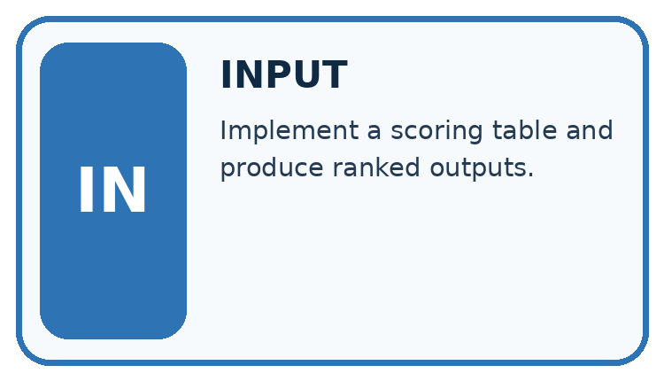
↓
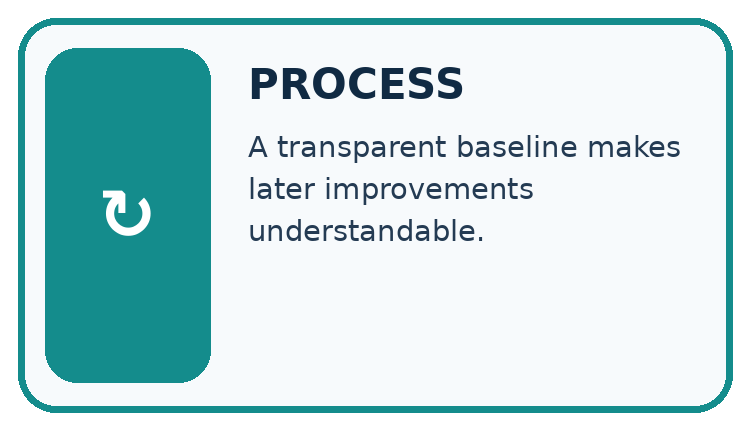
↓
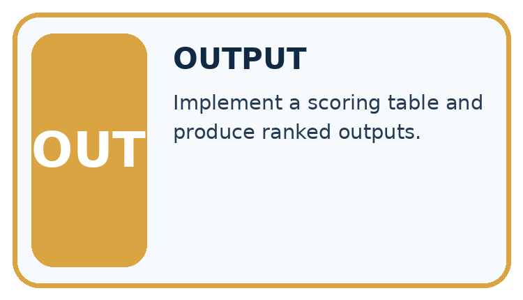
Which stage could fail even when the other two are correct? Explain:
A closer explanation
def recommend(items, limit):
best = None
best_score = None
for item in items:
if item["minutes"] <= limit:
score = 2 * item["fun"] + item["learning"]
if (best is None or score > best_score
or (score == best_score and item["name"] < best)):
best = item["name"]
best_score = score
return best
items = [{"name": "B", "fun": 3, "learning": 2, "minutes": 10},
{"name": "A", "fun": 2, "learning": 4, "minutes": 9}]
print(recommend(items, 10))Follow the evidence
The function prints nothing; the caller prints A. best starts as None to mean no eligible option found. Python short-circuits or: when best is None, later comparisons in that condition need not run. After selecting an item, best_score is numeric. An empty list or no eligible item returns None.
Trace the best-so-far record
Write a trace table with item, eligible, score and best-so-far. In the worked list, B qualifies and scores 8, so B becomes the current best. A also qualifies and scores 8. The scores tie, so the written alphabetical rule changes the best to A. Starting with A gives the same final answer. If no item qualifies, best stays None; do not invent a winner or quietly relax the limit.
Apply the connected idea: Building the data pipeline
def valid_item(row):
if type(row) is not dict:
return False
if type(row.get("name")) is not str or not row["name"]:
return False
for key, maximum in [("minutes", 60), ("fun", 5), ("learning", 5)]:
value = row.get(key)
if type(value) is not int or not 0 <= value <= maximum:
return False
return True
print(valid_item({"name": "A", "minutes": 20, "fun": 4, "learning": 2}))
print(valid_item({"name": "B", "minutes": 10, "fun": "4", "learning": 2}))Follow the evidence
The worked calls print True then False. Short-circuit checks keep absent or wrongly typed fields away from later operations. This Boolean helper does not explain the reason; add reason codes in the reporting stage or use a validation result record. Do not describe a range failure as a no-match outcome.
Trace the hand-off between stages
Think of validation and selection as two desks. At the first desk, each record is checked for required fields, exact types and allowed ranges; a batch check also checks unique names. Only accepted records go to the second desk, where the time limit and scoring policy are applied. A record can be valid yet too long to qualify. Report rejected and ineligible separately so a reader knows which decision removed an item.
Connect the picture and the explanation
Point to the input, the deciding step and the result in this week’s visual. Explain the same step in ordinary words. A picture helps when you can say what each part represents.
Student lesson · 4 of 16
Compare the cases
CASE GALLERY
Four Tests, Four Kinds of Evidence
A system is not understood until it survives more than one comfortable example.


NORMAL CASE: predict and name evidence. BOUNDARY CASE: predict and name evidence.


MISSING INFORMATION: predict and name evidence. TRANSFER CASE: predict and name evidence.
Which case is most likely to reveal a hidden assumption? Why?
Change one thing in the pictured case
Change: Change D’s pages to 91, leaving every other field unchanged.
Prediction: D becomes ineligible, so A wins with score 2.
Reason: The strict excess over the 90-page maximum changes filtering before ranking.
Student lesson · 5 of 16
Words that unlock the idea
VOCABULARY LAB
Words You Can Use to Reason
A definition matters when you can recognize the idea, use it, and contrast it with a near-miss.
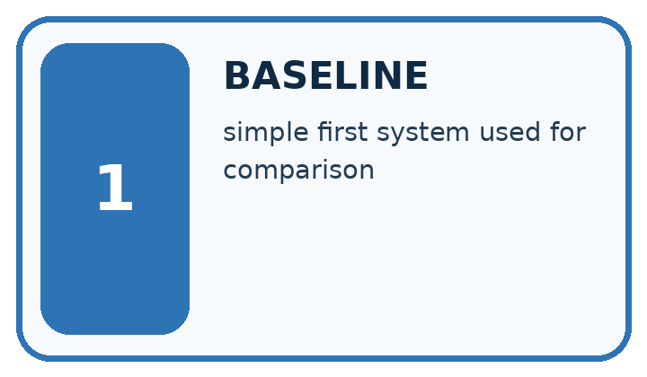
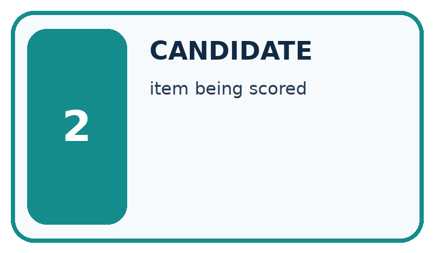
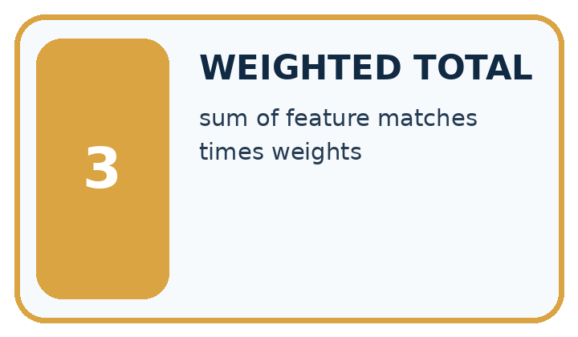
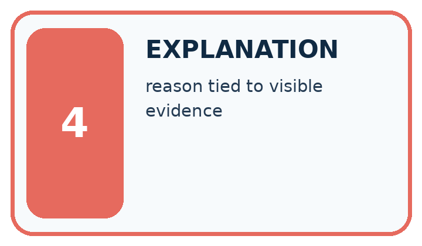
| Word | My own example | Not this / boundary |
|---|---|---|
| baseline | A simple reference method used to judge whether a more complex method adds value. | |
| candidate | An item or proposed answer being considered before a final selection. | |
| weighted total | A sum formed after multiplying each contribution by its assigned weight. | |
| explanation | An account connecting a result to the mechanism, calculation or evidence that supports it. |
Words used in the closer explanation
| Word | Meaning |
|---|---|
| Recommender | A procedure that suggests options using a stated policy |
| Tie | Two options have the same comparison score |
| Deterministic | The same inputs and rules produce the same result |
Terms for Building the data pipeline
| Term | Meaning |
|---|---|
| Stage | One part of a processing pipeline |
| Validation function | A function that decides whether an input meets a schema |
| Separation of concerns | Keeping different responsibilities in distinct parts |
| Rejection reason | An explanation of why a record was not accepted |
Student lesson · 6 of 16
Follow a worked example
WORKED EVIDENCE
Reason Step by Step
Predict first. Then check each step. A correct answer without visible reasoning is incomplete evidence.
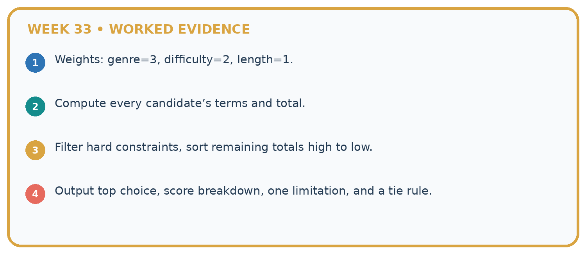
1. Weights: genre=3, difficulty=2, length=1.
2. Compute every candidate’s terms and total.
3. Filter hard constraints, sort remaining totals high to low.
4. Output top choice, score breakdown, one limitation, and a tie rule.
Recalculate, retrace, or restate the reasoning in your own representation:
CHECK Did the evidence answer the exact question? Did the total, path, or source record stay consistent?
A closer explanation
Apply the connected idea: Building the data pipeline
Learn from the worked case
Cover the result before checking it. Say what is given, choose the procedure, and follow one step at a time. Then uncover the result and explain your first mismatch. Ask why a step is allowed, not only what number it produces.
A pictorial worked case: Build the Recommender
A fictional book chooser filters a request before comparing preference scores.
The facts we will use
Request: animal subject, at most 90 pages. Score 2 for illustrated and 1 for comic. Tie chooses smaller ID.
A animal90 illustrated prose; B animal70 plain comic; C space60 illustrated comic; D animal80 illustrated comic.


Read the picture one step at a time
Why this result follows
Eligibility and ranking answer different questions. C has a high preference score but is not an animal book, so it must stay excluded. The implementation needs a no-match result and explicit tie policy even when this example has a unique winner. Save rejected reasons for an explanation, not just the final ID.
What this example does not establish
Toy preference weights do not imply shorter or illustrated books are universally better for all learners.
Read the labelled picture: Explain why B does not win after D is excluded even though it has fewer pages.
Change one thing: Change D’s pages to 91, leaving every other field unchanged. Predict the result before checking the explanation. What remains the same?
Student lesson · 7 of 16
Find and repair a mistake
ERROR DETECTIVE
Compare → Diagnose → Repair
Do not patch the answer. Find the earliest unsupported assumption, wrong step, or weak evidence.
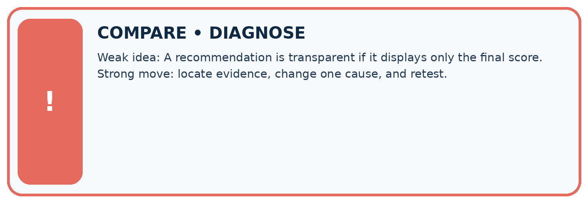
| Evidence record | Expected | Actual | Likely cause / next test |
|---|---|---|---|
| normal case | works | ||
| boundary case | stated rule | ||
| missing input | safe response | ||
| fresh transfer | generalizes |
Repair one cause. Why is this repair better than changing several things?
A closer explanation
The recommendation follows a written scoring policy. It does not learn preferences, prove learning benefit or authorize an action. Display the chosen rule and let a person review whether an option is suitable.
Apply the connected idea: Building the data pipeline
Each stage should have a clear input and output contract. A program can be correct at one stage but wrong at their connection, such as passing rejected rows into selection. Keep acceptance and rejection counts in the report.
Student lesson · 8 of 16
Practise together
LOGIC STUDIO
Trace Before You Run
Block code, pseudocode, tables, and diagrams are different ways to expose the same reasoning.

SET evidence_record PREDICT expected_result RUN one normal case and one boundary case COMPARE actual_result with expected_result IF different: locate first cause; change one factor; RETEST EXPLAIN result, limitation, and next safe step
Trace one input. Which line changes the state or chooses a path?
A closer explanation
Updating best on score >= best_score makes the last tied item win, so reordering can change results. Use the explicit name comparison for ties. Test both orders and a no-match case after the repair.
Apply the connected idea: Building the data pipeline
Calling the selector on raw data can crash or produce a result from invalid ratings. Route data through validation first. Duplicate names require a batch check even when each row individually passes; block the ambiguous batch for review instead of arbitrarily keeping one.
Practise with less help: Handle no match
Use workbook W2 for the connected example “Implementing a recommender”. First fill the input and rule boxes. Try the middle steps before asking for a hint. After a hint, try the next step yourself.
| Plan | Do | Check |
|---|---|---|
| What is given? Which rule or procedure applies? | Record each intermediate step. | Does the result follow? What remains unknown? |
Explain your trace to a partner. Your partner points to one step to check. Swap roles on the next case. Each person writes their own explanation.
Check your reasoning
Use the worked case for Implementing a recommender. Proposed explanation: “A successful run proves the conclusion”. Decide whether this explanation is supported. Point to the step or supplied fact that decides; explain your repair if needed.
Answer on your own before discussion. If you are unsure, say which step you need help with.
Practise the connected topic: Building the data pipeline
Use its named workbook W2. Identify the given inputs, try the middle steps with less help, then explain your trace. Check this claim before group discussion: A successful run proves the conclusion
Explain the picture
Explain why B does not win after D is excluded even though it has fewer pages.
This is supported practice. Keep the separately named independent case for an attempt before feedback.
Student lesson · 9 of 16
Run the investigation
EVIDENCE LAB
Predict → Test → Record → Explain
Keep expected and actual results separate. Surprises are useful data when recorded honestly.
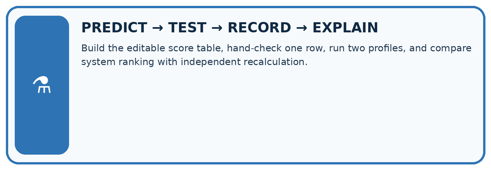
Build the editable score table, hand-check one row, run two profiles, and compare system ranking with independent recalculation.
| Test / input | Prediction | Actual | Evidence / calculation | Change or keep? |
|---|---|---|---|---|
| normal | ||||
| boundary | ||||
| missing | ||||
| fresh transfer |
What did the hardest test teach you that the normal test did not?
Plan → try → check
Before trying: what do I expect, and why? While trying: which step could first go wrong? Afterwards: what did I actually observe, and what should change? Keep “not run” if you only traced the procedure.
Student lesson · 10 of 16
Build your understanding
MASTERY
From Knowing the Word to Owning the Idea
Move upward only when you can produce evidence without copying the worked example.

1 • NAME: Define the concept without repeating the textbook.
2 • TRACE: Show the information, state, branch, calculation, or evidence path.
3 • APPLY: Solve a different example independently.
4 • CHALLENGE: Find a boundary case, counterexample, or unfair outcome.
5 • EXPLAIN LIMITS: Say when the result should not be trusted or used alone.
My strongest evidence of independent understanding:
Student lesson · 11 of 16
Connect your project
CUMULATIVE PROJECT
Transparent Book Recommender
Every week adds one inspectable piece. The system must show how it reached a result.
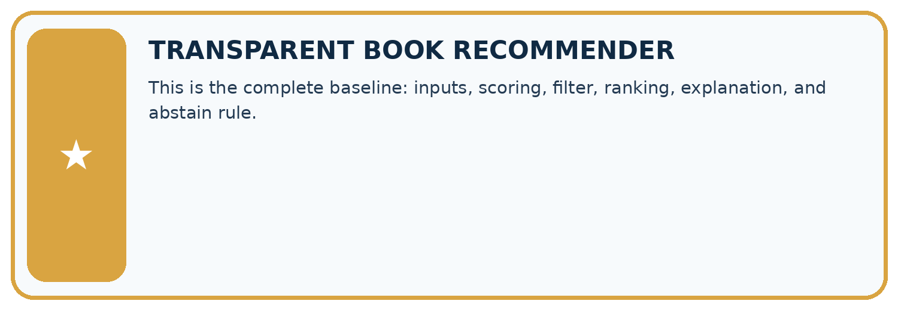
THIS WEEK’S CHECKPOINT This is the complete baseline: inputs, scoring, filter, ranking, explanation, and abstain rule.
SYSTEM MAP Reader need → allowed inputs → transparent rule or score → ranked candidates → explanation → test record → human decision
What will you add, change, or verify in the project this week?
What should remain under human control?
RESPONSIBLE DESIGN Collect only necessary information. Show uncertainty and limits. Never confuse a ranking with a fact about a person.
Evidence for your project
Save the recommender code, contract and this full trace; test the same records in different input orders.
Student lesson · 12 of 16
Show what you know
INDEPENDENT MASTERY PROOF
Explain • Transfer • Test • Defend
Complete this page without copying the worked example. Your reasoning matters more than decoration.
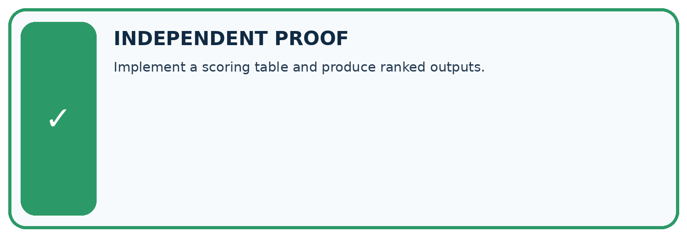
CHALLENGE Implement a scoring table and produce ranked outputs.
1. My fresh example, trace, calculation, or design:
2. My evidence that it works (include a boundary or missing-data case):
3. One limitation, fairness concern, or situation needing human review:
SELF-CHECK □ I explained the mechanism □ I used evidence □ I tested a fresh case □ I named a limitation □ I can answer ‘why?’
Student lesson · 13 of 16
Study a complete case
Week 33 Worked case
Use the supplied details to practise the weekly concept before attempting the independent question. This case extends the illustrated lesson.
The situation
A has flags (1,1), B=(1,0), C=(0,1); score=2g+l.
The question
Compute the winner and evidence to display.
Worked explanation
A wins at 3; B=2; C=1. Show flags, formula, scores and explanation; declare tie policy.
Explain it in your own words
Which detail supports the answer, and why does it matter?
Trace the supplied case visually
Build and expose the scoring calculation
| Evidence or stage | Value or result |
|---|---|
| A, genre and length | 3 |
| B, genre only | 2 |
| C, length only | 1 |
A has flags (1,1), B=(1,0), C=(0,1); score=2g+l.
Compute the winner and evidence to display.
A wins at 3; B=2; C=1. Show flags, formula, scores and explanation; declare tie policy.
Student lesson · 14 of 16
Try a new case independently
Independent case: Changed independent case
Request: mystery, at most 100 pages. Catalogue: D mystery110 illustrated; E mystery80 plain; F science80 illustrated; G mystery95 illustrated; H mystery90 illustrated. Filter first; score 3 for mystery plus 2 for illustrations; break ties by fewer pages.
Attempt this case before feedback. Record any help. Earlier examples below are further practice; a case already practised with feedback cannot establish fresh transfer.
Week 33 Independent application
Close the worked explanation. Apply the idea to this different question without copying.
A reader requests space and at most 60 pages. Book A is space, 90 pages; B is animals, 40 pages. What should the prototype return if both conditions are required?
My answer, with a trace, calculation or supporting evidence
Create and test
Change one relevant detail. Predict the result before testing. Include a boundary or missing-information case when it helps reveal a limit.
My changed input and expected result
Connect to your project
This is the complete baseline: inputs, scoring, filter, ranking, explanation, and abstain rule.
The evidence I will keep
Your teacher has the independent answer and scoring criteria. Complete the matching workbook week to keep your practice evidence together.
Transfer practice from the original programme
Catalogue: A mystery/90/illustrated, B mystery/140/not illustrated, C science/80/illustrated. Request mystery, maximum 100 pages. Rank with 2 genre points and 1 illustration point after filtering. Show why other books are excluded.
Use feedback to improve
Attempt the independent case before hints. Record whether you worked alone, used a hint or followed a model. After feedback, fix the first unsupported step and explain why it changed. A later check uses a changed case, not a copied answer.
Student lesson · 15 of 16
Your lesson route
Start with this question: A fictional book chooser filters a request before comparing preference scores.
| By the end, I can | How I will show it |
|---|---|
| Implement a deterministic recommender | Explain the deciding step, show a trace or test, and state one limit. |
| Handle ties and no eligible options | Explain the deciding step, show a trace or test, and state one limit. |
| Explain recommendations with their limits | Explain the deciding step, show a trace or test, and state one limit. |
Remember → watch and explain → try with help → investigate → try independently → keep project evidence. Your teacher may spread this lesson across several classes.
Keep your first prediction. Compare it with what the evidence shows and explain any change.
Student lesson · 16 of 16
Finish and return
Close your notes. Explain this goal in your own words: Implement a deterministic recommender
If you are unsure, return to the worked picture and explain one arrow. If you are ready, change an input or assumption and justify your prediction.
Save your workbook evidence. At the next review, try a different case before opening your old answer.